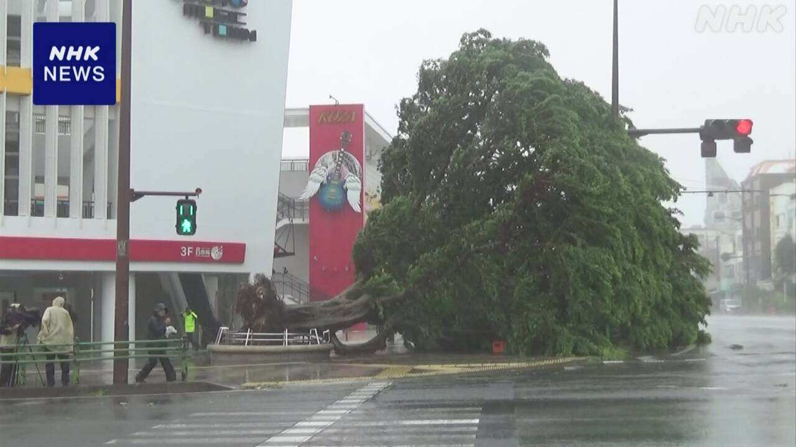
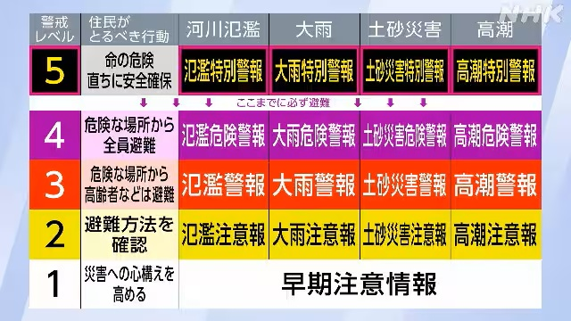
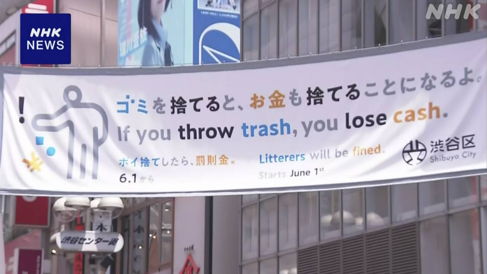
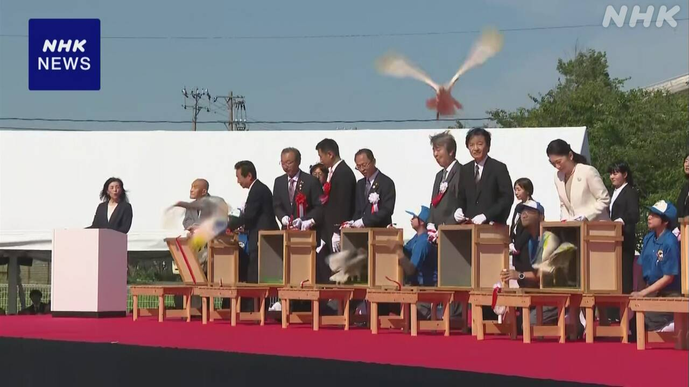

最新ニュース
1️⃣ 台風6号が沖縄の近くを進んでいる 気をつけて

台風6号のニュースです。
気象庁によると、台風は沖縄の近くを北に進んでいます。沖縄や奄美で、とても強い風が吹いています。走っているトラックが倒れるくらい強い風が吹くかもしれません。
とてもたくさん雨が降って、山が崩れたり、川の水があふれたりする心配もあります。
台風は、2日と3日は、西日本と東日本の近くに来そうです。台風の新しい情報を調べて、台風が近くに来る前に準備してください。
飛行機や新幹線などに乗る予定の人は、情報を調べましょう。
2️⃣ 災害のとき レベル4「危険警報」までに安全な場所に避難を

台風などで災害の心配があるとき、警報や注意報が出ます。
5月から気象庁などは、危険を知らせる情報を新しくしました。川の水があふれそうなときなど、4つの災害のときに知らせます。
どのくらい危険なのか数字で知らせます。
いちばん危険なのはレベル5で「特別警報」です。もう災害が起こっているかもしれません。
次に危険なのはレベル4で「危険警報」です。「危険警報」までに、安全な場所に避難してください。
専門家は、新しい情報を使って、安全な場所に早く避難することを考えてほしいと言っています。
3️⃣ 渋谷区 道などにごみを捨てた人は2000円払う

1日から、東京の渋谷区で、新しいルールが始まりました。
道などにごみを捨てた人は罰のお金を払わなければなりません。
1日渋谷駅のまわりで、役所の人などが、道などにごみを捨てる人がいないか、見ていました。
罰のお金は2000円です。お金のほかに、クレジットカード、QRコードで払うことができます。
渋谷区は、コンビニや食べ物を売る店などは、ごみ箱を置くというルールも作りました。道などにごみを捨てないで、店のごみ箱に捨ててほしいと言っています。
区の人は「道などにごみを捨てる人に厳しくして、きれいなまちにしたいです」と話しています。
4️⃣ 石川県 佐渡から運んだ「トキ」が自然の中で飛んだ

5月31日、石川県能登地方の羽咋市で、トキ8羽を自然の中に出しました。トキは新潟県佐渡市から運びました。
トキは日本がとても大切にしている鳥です。とても数が少ないです。
今は佐渡市で、中国からもらったトキを増やしています。
佐渡市のトキが、佐渡市以外の場所で自然の中に出て飛んだのは初めてです。
トキを守る活動をしてきた101歳の男の人は「トキに、石川県の能登地方に住んでほしいです」と話しました。
石原環境大臣は「日本にいるトキの数を1000羽以上に増やしたいです」と話しました。
- 〜ている / 〜でいる
- 〜によると
- 〜ても / 〜でも
- 〜くらい / 〜ぐらい
- 〜かもしれない / 〜かもしれません
- 〜たり〜たりする
- 〜そうだ
- 〜てください / 〜でください
- 〜前に
- 〜予定
- 〜ましょう / 〜ましょうか
- 〜や〜など
- 〜など
- 〜がある / 〜がいる
- 使役 (〜させる / 〜せる)
- 〜から
- 〜まで
- 〜までに
- 〜こと
- 〜ことができる
- 〜という
- 〜ないで
- 〜中
- 〜以上
vebaev.github.io
Generated: 2026-06-01 16:38:54 UTC